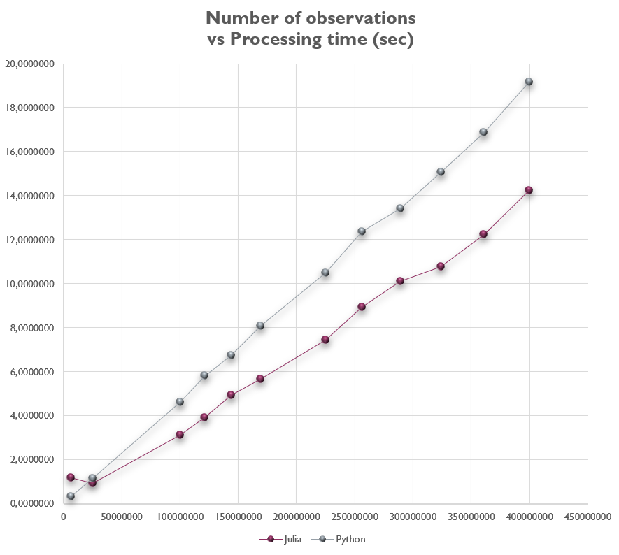
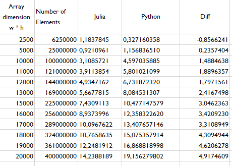

Performance benchmarking for Julia and Python in a geospatial task.

A little while ago, I was confronted with a question. If you could start again to learn programming for geospatial analysis, where would you start?
Knowing that the big geospatial data domains are raster data on the one hand, and vectors on the other, I would start with raster data first.
Maybe this decision responds to something totally subjective, but I find that raster data allow us to review some topics such as time series analysis, raster algebra, geotransform, geographic vs projected coordinate systems, etc. If you find this statement out of place, or have a preference for vector data over raster data for getting started in the world of geospatial data programming, feel free to weigh in with your opinion to the contrary in the comment box.
With that cleared up. I guess if you ask me what task would be good to start with, I would say a small script to calculate the normalized vegetation index (NDVI). Here we can review the concepts of raster algebra, creating a raster output to contain the results of the calculation and writing the raster to our file system.
This post is more a comparison of two programming languages to perform the same task. One is Python, the language with which I started in this programming world, and the other is Julia, which I am currently exploring in order to see the advantages over interpreted languages like Python.
The promises of Julia have been trumpeting across many programming blogs. A language that combines the syntax of a high level language, with the speed of a low level language, is what we have been promised.
So I wanted to do this benchmarking between these two languages for the following task: calculate two arrays of integer values. The dimension of the array will be incremented in a "FOR" loop of a list of numbers that define the dimension in the x-direction and the y-direction of the array. Then these two matrices that simulate the values of a red and a near infrared band, will be used to calculate a normalized difference index (simulating the NDVI index), to finally write the results in an output raster. We didn't add any spatial reference to the raster datasets, for this is not the main focus of this post.
The codes are posted here below.
Python Code
Julia Code
Below we collect the data in a table about the performance in seconds of each of the scripts for a variable input data size.

We can observe that as the number of elements to process increases, the difference between the processing time between Julia and Python also increases. We can also observe that there is almost a difference of 5 seconds for a number of 400 million elements which would be a matrix of 20 000 x 20 000.
Finally, we can see graphically in the following figure the plotting of the execution times of each program written in Python and Julia vs. the number of elements to be processed.
Something interesting is to see that in the first review of the for loop Python recorded a faster execution time than Julia. The explanation for this is the variable type checking that takes place in the for loop. While Python has to know what type of variable it is in each of the cycles of the for loop, this process is done once and just once by Julia.
In this post, we have been able to see the differences between Julia and Python for a simple geospatial task. Julia's runtime is faster for all but the first input size compared to Python. Some thoughts on why this may be were also given.